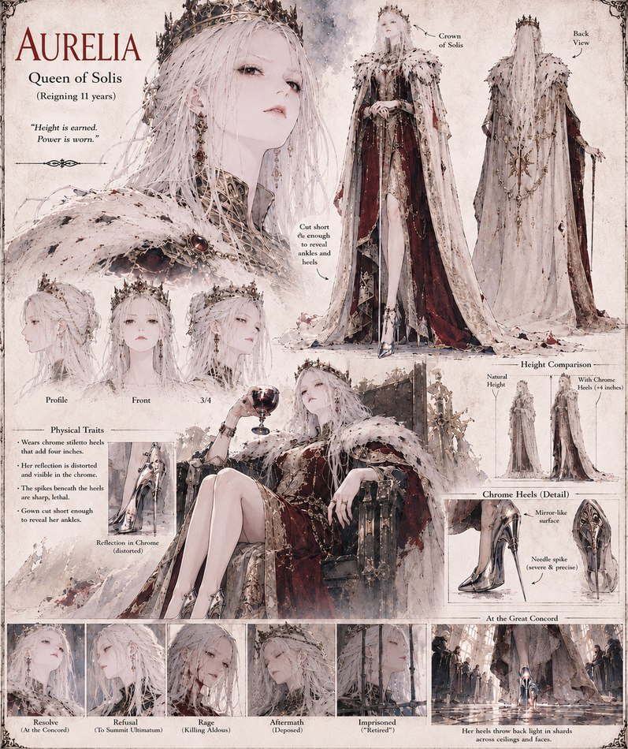

Aurelia
Queen of Solis · reigning eleven years
Queen of Solis, and the first person the chrome heels are ever placed on. They add four unmistakable inches, catch and distort every reflection near them, and hide a needle-sharp spike beneath each sole — and over the following months they turn, for her, from a private vanity into something closer to a need. She wears them into the Great Concord and refuses Beatrice's later ultimatum outright; by the time she kills Duke Aldous with one of them in the Great Hall, the war they started has already outgrown her ability to end it. She's deposed shortly after, and lives out what's left of her reign “retired” under guard.
“Height is earned. Power is worn.”